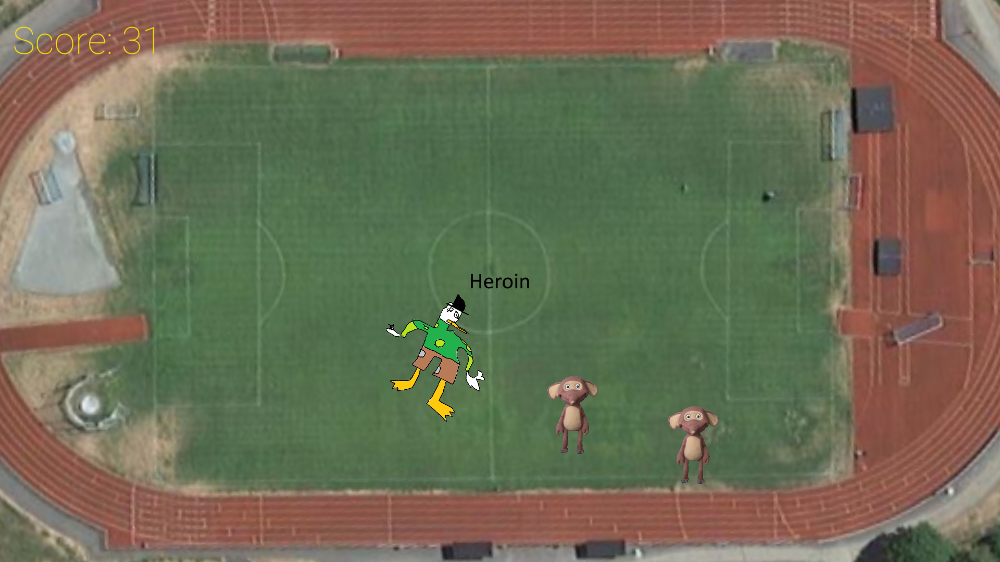

Fantorang Defend
Fantorang defend er et megapopulært spill der du skal bekjempe Fantoranger
Karakterer:
Unkel Spiker
Unkel Spiker er Unkel Skrues fattige stebror som tar heroin på gata og er en skam for McDuck familien. Han er kjent for å ha spredt svartedauen, og spist barn
Erna Solberg
Erna Solberg er tidligere norsk statsminister og rasist. Erna har tilgang til tyske tanks, og vil bruke dem til å forsvare stortinget, der ho har blørkakene lagret
Shrek
Du burde vite hvem han er
Om spillet
I dette spillet kan du spille som en av tre figurer, Unkel Spiker, Erna Solberg, og Shrek.
Når du har valgt karakter får du i oppgave å beskytte noe som karakteren bryr seg om.
fantorangen har sluppet fri sine ondere kloner ut i verden for å stjele viktige ting og kidnappe mindreårige barn.
det er opp til deg å stoppe dem fra å ta alt av verdi i verden, ett steg av gangen.
oppdatering kommer aldri